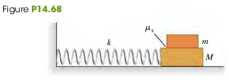

A Physical Pendulum is any real pendulum that uses an extended body, as contrasted to the idealized simple pendulum with all of its mass concentrated at a point.
Figure 14.23 shows a body of irregular shape pivoted so that it can turn without friction about an axis through point O. When the body is displaced as shown, the weight mg causes a restoring torque
τ=−(mg)(dsinθ)(1)
When the body is releases, it oscillates about its equilibrium position. The motion is not SHM becaues the torque τ is proportional to sinθ rather than to θ. However, if θ is small, we can approximate sinθ by θ in radians. Then the motion is approximately SHM.
τ=−mgd(θ)(2)
The torque and angular acceleration have the relation that ∑τ=Iα,
τ=−mgd(θ)=Iα=Idt2d2θdt2d2θ=−Imgdθ(3)
Comparing equation (3) with a=dt2d2x=−mkx for the spring-mass system, the quantity (Imgd) and mk play the same role. Thus the angular frequency is
ω=Imgd(4)
where m is the mass of the object, d is the distance from the center of mass to the pivot point and I is the moment of inertia. (can be obtained by parallel axis-theorem)
The period T is
T=ω2π=2πmgdI(5)
Examples
(14.9) If the body in Fig 14.23 is a uniform rod with length L, pivoted at one end, what is the period of its motion as a pendulum?
Solution
According to the parallel axis theorem, the moment of inertia of a uniform rod about an axis through one end is
(14.53) Two pendulums have the same dimensions (length L) and total mass (m). Pendulum A is a very small ball swinging at the end of a uniform massless bar. In pendulum B, half the mass is in the ball and half is in the uniform bar.
a. Find the period of pendulum A for small oscillations.
b. Find the period of pendulum B for small oscillations.
Solution
a. The moment of inertia of the ball is I=mL2. The period TA is
TA=2πmgdI=2πmgLmL2=2πgL
b. For pendulum B the distance d from the axis to the center of gravity is 3L/4. Ibar=31⋅2mL2 for a bar of mass 2m and the axis at one end. For a small ball of mass 2m at a distance L from the axis, Iball=2mL2. The distance d=43L
(14.54) We want to support a thin hoop by a horizontal nail and have the hoop make one complete small-angle oscillation each 2.0 s.
Solution
The period T is
T=2πmgdI(1)
The moment of inertia of the thin hoop about the axis through one end is
I=mR2+mR2=2mR2(2)
The distance d from the center of mass to the pivot point is d=R.
Combining (1) and (2), we have
T⇒R=2πmgR2mR2=2πg2R=(2πT)2⋅2g=0.496m
(14.55) A 1.80-kg connecting rod from a car engine is pivoted about a horizontal knife edge as shown in Fig. E14.55. The center of gravity of the rod was located by balancing and is 0.200 m from the pivot. When the rod is set into small-amplitude oscillation, it makes 100 complete swings in 120 s. Calculate the moment of inertia of the rod about the rotation axis through the pivot.
Solution
1. Period T=100120s=1.2s
2. The moment of inertia can be obtained by
(14.64) An object is undergoing SHM with period 0.300 s and amplitude 6.00 cm. At t = 0 the object is instantaneously at rest at x = 6.00 cm. Calculate the time it takes the object to go from x = 6.00 cm to x = -1.50 cm.
Solution
The position vs time equation is x(t)=Acos(ωt+ϕ). When t=0,x=A, we have ϕ=0. Therefore
(14.66) Four passengers with combined mass 250 kg compress the springs of a car with worn-out shock absorbers by 4.00 cm when they get in. Model the car and passengers as a single body on a single ideal spring. If the loaded car has a period of vibration of 1.92 s, what is the period of vibration of the empty car?
Solution
1. The force constant of the spring is
k=xF=0.04250⋅9.8=61250N/m
2. The period of the loaded car is Tloaded=1.92s. Calculate the mass of the loaded car mloaded
(14.68) A block with mass M rests on a frictionless surface and is connected to a horizontal spring of force constant k. The other end of the spring is attached to a wall (Fig. P14.68). A second block with mass m rests on top of the first block. The coefficient of static friction between the blocks is μs. Find the maximum amplitude of oscillation such that the top block will not slip on the bottom block.
